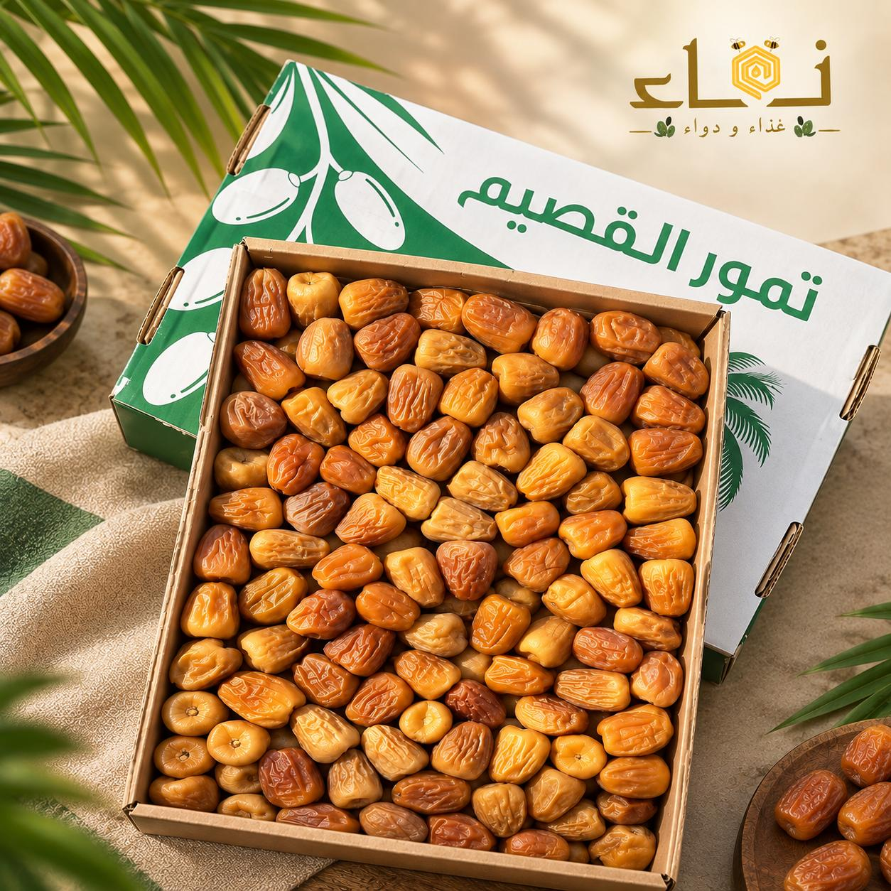
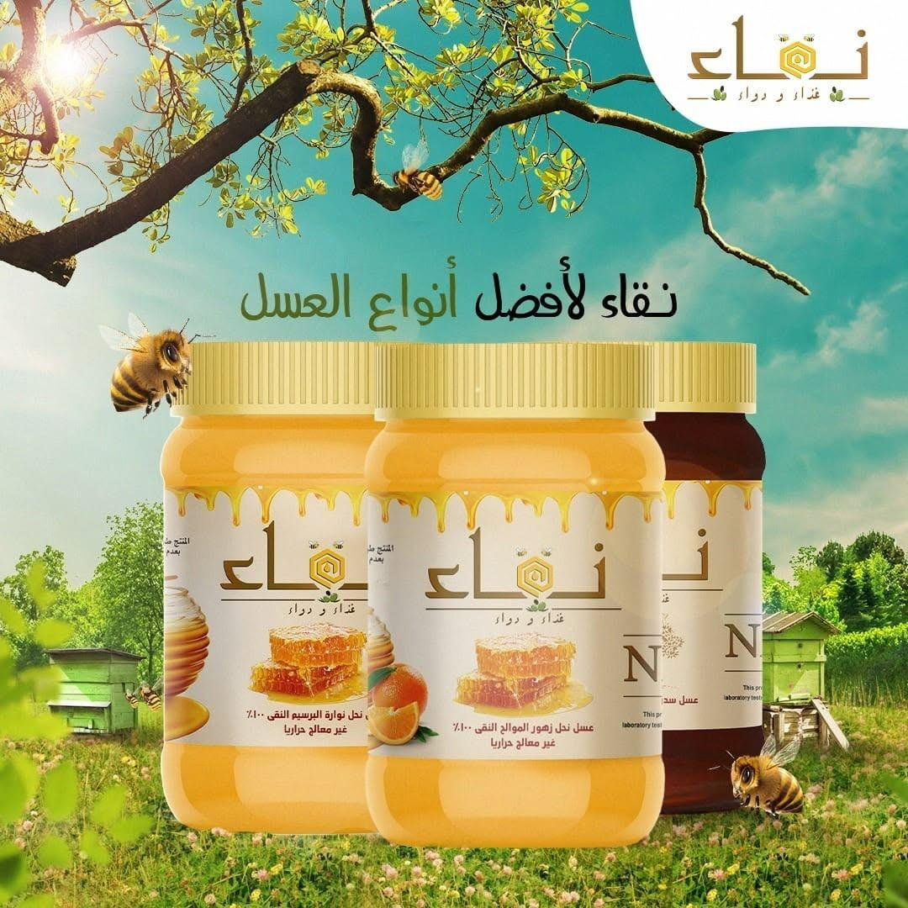
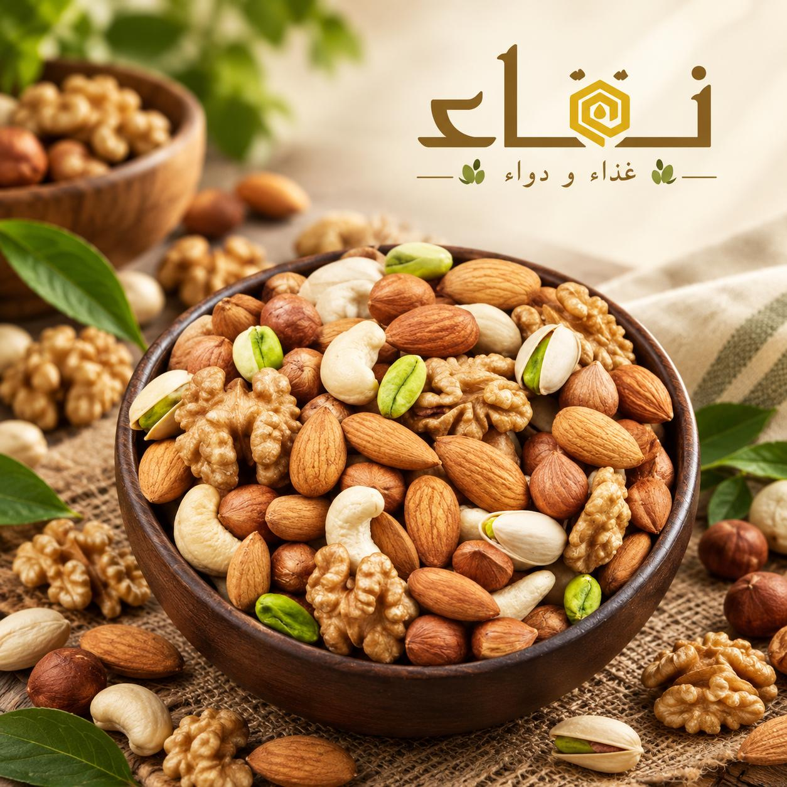
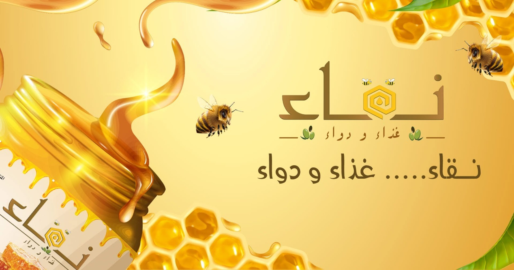

🥜 تمور بالمكسرات
مزيج شهي يجمع بين حلاوة التمر الطبيعي وقرمشة المكسرات المختارة، ليقدم لكم تجربة مميزة تجمع بين الطعم والفخامة.

اختيارنا من أجود أنواع التمور، بطعم طبيعي غني وقوام مميز، لتستمتعوا بمذاق أصيل وجودة عالية في كل حبة.
مزيج شهي يجمع بين حلاوة التمر الطبيعي وقرمشة المكسرات المختارة، ليقدم لكم تجربة مميزة تجمع بين الطعم والفخامة.

زيت زيتون طبيعي مستخلص بعناية للحفاظ على نكهته المميزة وجودته، ليكون إضافة مثالية لأطباقكم اليومية.

عسل طبيعي بمذاق غني وحلاوة مميزة، يتم اختياره بعناية ليمنحكم تجربة أصيلة تجمع بين الجودة والطعم الرائع.

تشكيلة متنوعة من أجود أنواع المكسرات المختارة بعناية، بطعم غني وقرمشة لذيذة، مناسبة للضيافة أو كوجبة خفيفة في أي وقت

في نقاء، نؤمن أن أجمل الاختيارات تبدأ من الطبيعة. نسعى إلى تقديم مجموعة متنوعة من المنتجات الغذائية التي تضيف لمائدتك مذاقًا مميزًا وتجربة تستحقها. دي صياغة تجريبية تقدري تعدليها بما يناسب قصة الشركة الحقيقية.